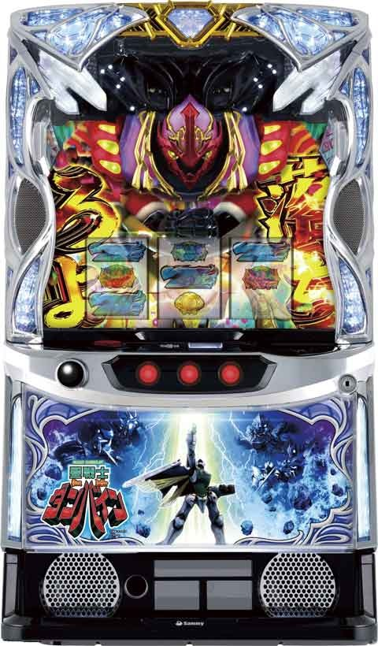
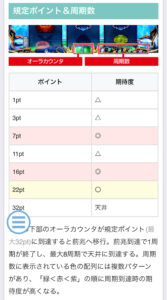
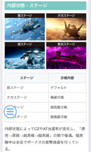

Lダンバイン

【天井情報】
763G+α ボーナス当選
周期天井 8周期目ボーナス当選
設定変更時 5周期目ボーナス当選
【リセット判別】
Sammyのためガックン判別不可？
リセット時は0-110G内部加算あり。オーラカウンタも0-16pt内部加算あり。
【有利区間について】
不明
狙い目
【リセット狙い】
120Gから
or
積極派 2周期0ptから
慎重派 3周期0ptから
【ボーナス間天井狙い】
450Gから(周期5周期未満カウンタ5pt未満想定)
or
6周期0ptから
※オーラカウンタや周期数でボーダー調整する事になりそう
【周期天井狙い】
不明
【規定ポイント狙い】
特にプラス要素無い場合は25ptから？
アイコンが赤やカウンタ背景緑以上とかならボーダー下げる感じ？
7pt、16ptは期待度高めなので1-2pt手前から打てそう？
オーラカウンタの背景の色で規定ptの示唆している可能性あり。青がデフォで緑と紫があるらしい。
規定ポイント狙いは周期のアイコンでボーダー調整する感じになりそう。
※オーラカウンタは液晶に表示されている。
【有利区間切れ狙い】
不明
やめ時
ST終了後の63G+αの引戻し区間は弱いため確認するかは好みで良さそう。
ただ、一撃1000枚超えると引き戻し強めだから見た方が良さそう。
ボーナスのみはチャンスタイムだけ消化してやめ。
その他


参考元
基本情報
- メーカー: サミー
- 機械割: 97.9% 〜 114.4%
- 導入開始日: 2024年12月02日（月）
- ゲーム性概要: ●オーラカウンタとCZでボーナスを抽選 ●オーラボーナス後はSTへ、フェラリオボーナス後はチャンスタイムへ ●STループ率は約91%、上位STなら約94% ●ST中ボーナスはベルナビ回数管理型で、純増は約6.0枚/G ●ボーナス枚数上乗せゾーンの「オーラアタック」も搭載


打ち方
打ち方・小役
打ち方（小役狙い）
「最初に狙う絵柄」

押し順ナビ発生時を除き、全リールフリー打ちでOK。
「レア役の停止形」

オーラ役の複数停止はチャンスアップだ。
変則押しはNG

通常時、押し順ナビ非発生時は左リール第1停止での消化を推奨する。
確定役
オールスター目の恩恵
| タイミング | 恩恵 |
|---|---|
| 通常時 | オーラボーナス濃厚 |
| ST中 | オーラアタック当選期待大（継続率も優遇） |
| 聖戦士の道 | 浄化閃撃当選濃厚 |
解析情報通常時
小役関連
オーラ役

通常時の各種抽選のメインはオーラ役。赤・青・紫の3種類があり、成立したオーラ役ごとに抽選内容が異なる。2つが複合すればチャンス、3つが複合するオールスター目は激アツだ。
オーラ役ごとの抽選内容
| オーラ役 | 抽選 |
|---|---|
| 全オーラ役共通 | オーラカウンタ加算 |
| 赤オーラ | 内部状態昇格抽選 |
| 青オーラ | オーラカウンタ3pt以上加算 |
| 紫オーラ | CZ抽選 |
内部状態別・オーラカウンタの加算ポイント
| オーラ役 | 通常 | 高確 | 超高確 | 極高確 |
|---|---|---|---|---|
| 赤オーラ | 1pt | 1pt | 1pt | 大チャンス |
| 青オーラ | 3pt | 5pt | 7pt | 大チャンス |
| 紫オーラ | 1pt | 1pt | 1pt | 大チャンス |
複合オーラ役を引いた場合は赤オーラ→紫オーラ→青オーラの順で抽選がおこなわれるので、例えば赤紫オーラ成立時は赤オーラの内部状態昇格抽選の後に紫オーラのCZ抽選をおこなう。
小役確率
| 役 | 確率 |
|---|---|
| 3枚ベル | 1/87.6 |
| 左1st3枚ベル・ST中押し順3枚ベル | 1/16.0 |
| リプレイ揃い | 1/65.5 |
| 赤オーラ | 1/59.6 |
| 青オーラ | 1/59.6 |
| 紫オーラ | 1/59.6 |
| 赤青オーラ | 1/885.6 |
| 赤紫オーラ | 1/885.6 |
| 青紫オーラ | 1/885.6 |
| オールスター目 | 1/16384.0 |
| リプレイ/オーラ役1個（※1） | 1/15.7 |
| リプレイ/オーラ役2個（※1） | 1/234.1 |
| リプレイ/オールスター目（※1） | 1/16384.0 |
| 3枚ベル合算 | 1/13.5 |
| リプレイ合算（※2） | 1/12.0 |
| 左1stオーラ役合算 | 1/18.6 |
※1…中リール狙えでオーラ役が停止する可能性あり ※2…リプレイ揃いと（※1）のリプレイフラグの合算確率
「リプレイフラグ解説」 リプレイ揃いには、どこから押してもリプレイが揃うフラグと中押しナビ発生時にオーラ役が停止するフラグの2パターンが存在。滞在状態等に応じて、リプレイフラグ成立時に中押しナビを出すことでオーラ役が停止する。
極高確中のボーナス当選率
極高確移行後はボーナス当選まで内部状態が転落することはない。全役でボーナス抽選をおこなっていて、オーラ役でのボーナス当選時はオーラボーナス濃厚となる。
極高確中・ダンバインSP（連続演出）発展期待度
| 役 | 期待度 |
|---|---|
| オーラ役以外の小役揃い | 40.2% |
| オーラ役 | 100% |
赤オーラ・内部状態昇格率
| 滞在状態 | 昇格率 |
|---|---|
| 通常 | 約82%で高確へ |
| 高確 | 約50%で超高確へ |
| 超高確 | 約20%で極高確へ |
| 極高確 | ボーナス濃厚 |
内部状態関連
内部状態
| 項目 | 内容 |
|---|---|
| 種類 | 通常＜高確＜超高確＜極高確 |
| 昇格契機 | 赤オーラ |
| 変化する抽選内容 | 上位の状態ほど、オーラ役成立時の抽選値が上昇 |
| その他 | 極高確 （ラース・ワウ） 中は全役でボーナス直撃を抽選 |
ST終了後の高確以上移行

ST終了後は高確や超高確からスタートする可能性があり、高設定ほど期待できる。ST後2G目以降に、特に何も引いていないのに夕や夜ステージへ移行すれば高確以上の期待大！
オーラカウンタ
オーラカウンタ概要

通常時はリール下に表示されたオーラカウンタが規定ポイント（最大32pt）に到達すると、前兆が発生してボーナスの当否を告知。前兆発生で1周期となり、最大8周期目が天井（ボーナス）だ。周期数の種の配列には複数のパターンがあり、緑＜赤＜紫の順に周期到達時の期待度が高い。種の配列はCZ失敗時や前兆終了時に変化することがあり、変化した場合は近い周期でのボーナス当選期待度が大幅にアップする。
規定ポイント到達時の前兆発生期待度
| ポイント | 期待度 |
|---|---|
| 1pt | △ |
| 3pt | △ |
| 7pt | ◎ |
| 11pt | △ |
| 16pt | ◎ |
| 22pt | 〇 |
| 32pt | 天井 |
フェラリオボーナス後は、ST終了後の引き戻し抽選がない代わりに、1周期目の期待度がアップしている。
特定周期までのボーナス当選期待度
| 周期 | 期待度 |
|---|---|
| 1周期以内 | 約47% |
| 3周期以内 | 約77% |
ミッションモード（CZ）
ミッションモード概要

前半の10Gでレベル（期待度）を上げ、後半の連続演出成功でボーナス当選となるチャンスゾーン。 オーラ役で1レベルアップ、複合役（オーラ役2個停止）なら2レベルアップ、オールスター目はボーナス濃厚となる。
ミッションモード性能
| 項目 | 内容 |
|---|---|
| 当選契機 | 紫オーラでの抽選 |
| 継続ゲーム数 | 10G |
| 消化中の抽選 | オーラ役でレベルを上げ、連続演出成功でボーナス |
| 成功期待度 | 約30% |
ミッションモード確率
| 設定 | 確率 |
|---|---|
| 1 | 1/411.7 |
| 2 | 1/411.8 |
| 3 | 1/411.2 |
| 4 | 1/410.2 |
| 5 | 1/401.7 |
| 6 | 1/402.6 |
レベルアップ当選確率
| 現在のレベル | 確率 |
|---|---|
| レベル0 | 1/18以上 |
| レベル1以上 | 約1/18 |
オーラ役確率は約1/18。レベル0滞在時はリプレイフラグ成立時の一部で狙えが発生してオーラ役に変換されるため、レベル1へは比較的アップしやすい。レベル1からは約1/18をどれだけ引けるかの勝負になる。
「レベルアップ」

レベルごとの発展先
| レベル | 発展先 |
|---|---|
| レベル0 | 2Gバトル |
| レベル1 | ダンバインSP |
| レベル2 | ビルバインSP |
| レベル3 | ボーナス濃厚 |
| レベル4 | オーラボーナス濃厚 |
ミッションモード経由・2Gバトルの勝利期待度
※書き換えを含まない期待度
アタックモード（CZ）
アタックモード概要

ミッションモードよりも期待度の高いチャンスゾーン。小役成立で敵機を撃破していき、1000体撃破できればボーナス濃厚だ。
アタックモード性能
| 項目 | 内容 |
|---|---|
| 当選契機 | 紫オーラでの抽選 |
| 継続ゲーム数 | 20G＋α |
| 消化中の抽選 | 成立役に応じた敵機の撃破抽選 |
| 成功期待度 | 約55% |
アタックモード確率＆成功期待度
| 設定 | 確率 | 成功期待度 |
|---|---|---|
| 1 | 1/943.2 | 56.3% |
| 2 | 1/926.0 | 56.4% |
| 3 | 1/908.8 | 56.7% |
| 4 | 1/878.1 | 56.7% |
| 5 | 1/835.0 | 57.1% |
| 6 | 1/804.7 | 57.4% |
「敵機撃破」

小役成立で必ず撃破、オーラ役は大量撃破に期待だ。
「オーラ狙え高確」

ハズレの連続成立で移行する可能性があるオーラ役の高確状態。
敵機減算数振り分け
| 減算数 | ハズレ目 | リプレイ・ ベル揃い | オーラ役1個 | オーラ役2個 |
|---|---|---|---|---|
| 0体 | 75.0% | ー | ー | ー |
| 50体 | 23.0% | ー | ー | ー |
| 100体 | 2.0% | 75.0% | ー | ー |
| 200体 | ー | 23.0% | 75.0% | ー |
| 300体 | ー | 2.0% | 22.7% | ー |
| 500体 | ー | ー | 2.0% | 75.0% |
| 1000体 | ー | ー | 0.4% | 25.0% |
※オールスター目はボーナス当選濃厚
オーラ狙え高確中も、成立役ごとの減算数は共通（オーラ役の確率のみが変化）。
アタックモード突入時の成功当選率
高設定ほど突入時の成功抽選に当選する可能性が高い。 初期敵数が777機や1001機から始まった場合や、残りゲーム数が0かつ、オーラ狙え高確以外の敵非撃破でアタックモードが終了しない場合などは初期成功だった可能性が高い。
ダンバイン起動ミッション
ダンバイン起動ミッション概要


小Vベルが規定回数成立すると、専用CZのダンバイン起動ミッションに突入。発生ゲームの成立役を参照してボーナスを抽選し、当否は連続演出で告知される。
ダンバイン起動ミッション性能
| 項目 | 内容 |
|---|---|
| 当選契機 | 小Vベルが規定回数成立 |
| 消化中の抽選 | ミッション発生ゲームの成立役でボーナスを抽選 （小役以上成立でダンバインSP以上へ） |
ダンバイン起動ミッション確率
| 設定 | 確率 |
|---|---|
| 1 | 1/640.5 |
| 2 | 1/639.2 |
| 3 | 1/636.6 |
| 4 | 1/633.4 |
| 5 | 1/631.1 |
| 6 | 1/626.7 |
［規定回数示唆］

規定回数が近づくと、液晶右上にカウントダウンが発生する。
ダンバイン起動ミッション期待度（設定1）
| 項目 | 期待度 |
|---|---|
| 起動成功期待度 | 22.4% |
成立役別・ボーナス期待度
| 役 | 期待度 |
|---|---|
| オーラ役以外 | 34.0% |
| オーラ役1個 | 50.5% |
| オーラ役2個以上 | 100% |
前兆
前兆中の書き換え抽選
前兆中（CZ・ボーナス共通）のオーラ役成立時は、報酬の格上げを抽選。 書き換えはSPリーチ非発展＜SPリーチ発展＜ボーナス＜オーラボーナスの順番に昇格していく（1契機で複数段階の昇格アリ）。
前兆中・報酬昇格当選率
| 役 | 当選率 |
|---|---|
| オーラ役1個 | 2.0% |
| オーラ役2個 | 25.0% |
| オールスター目 | 100% |
書き換えを含んだ連続演出トータル期待度
| 設定 | 2Gバトル | ダンバインSP |
|---|---|---|
| 1 | 1.1% | 40.7% |
| 2 | 1.1% | 40.9% |
| 3 | 1.1% | 41.3% |
| 4 | 1.1% | 41.7% |
| 5 | 1.1% | 42.2% |
| 6 | 1.2% | 42.7% |
前兆ゲーム数別の特徴
| ゲーム数 | 特徴 |
|---|---|
| 13G | 激熱 |
| 14G | プチチャンス |
| 15G | チャンス |
| 16G | デフォルト |
| 17G | プチチャンス |
| 18G | デフォルト |
| 19G | チャンス |
| 20G | ー |
| 21G | 激熱 |
前兆ゲーム数振り分け
| ゲーム数 | 2Gバトル | ダンバインSP | フェラリオ ボーナス | オーラ ボーナス |
|---|---|---|---|---|
| 13G | ー | ー | 6.3% | 6.3% |
| 14G | 6.3% | 12.5% | 12.5% | 12.5% |
| 15G | 0.8% | 12.5% | 12.5% | 25.0% |
| 16G | 62.5% | 25.0% | 12.5% | 6.3% |
| 17G | 4.7% | 12.5% | 12.5% | 12.5% |
| 18G | 25.0% | 25.0% | 12.5% | 6.3% |
| 19G | 0.8% | 12.5% | 25.0% | 25.0% |
| 20G | ー | ー | ー | ー |
| 21G | ー | ー | 6.3% | 6.3% |
CZ・AT当選率
紫オーラ・CZ当選率
| 役 | 通常 | 高確 | 超高確 |
|---|---|---|---|
| 紫オーラ | 5.1% | 25.0% | 80.1% |
| 赤紫or青紫オーラ | 25.0% | 80.1% | 100% |
演出動画
ロングフリーズ
通常時（前兆中・CZ中除く）のオールスター目成立時の約10%で発生。ハイパーオーラボーナス当選濃厚なので、ビルバインラッシュへ直行する。期待枚数は約2500枚と超強力!!
フリーズ
ロングフリーズ


通常時（前兆中除く）のオールスター目成立時にロングフリーズが発生する可能性あり。
ロングフリーズ性能
| 項目 | 内容 |
|---|---|
| 発生契機 | 通常時、非前兆中のオールスター目成立時の約10% |
| 発生確率 | 約1/220000 |
| 恩恵 | ハイパーオーラボーナス |
| 期待枚数 | 2500枚以上 |
その他
朝イチボーナス入賞

朝イチ限定でスタンバイ表示が出現する可能性あり。内部的にリアルボーナス作動時に出現する可能性がある画面で、出現後は特定ゲーム数消化でオーラジャッジへ移行する（オーラボーナスorフェラリオボーナス当選）。
解析情報ボーナス時
初当りボーナス
オーラジャッジ

初当り後は、オーラジャッジでオーラボーナスかフェラリオボーナスかを決定。ハイパーオーラボーナスに当選することもある。 フェラリオボーナス中の書き換えやチャンスタイム中の抽選を含んだ、トータルのダンバインラッシュ突入期待度は約58%。
ボーナス割合（設定1）
| ボーナス | 割合 |
|---|---|
| オーラボーナス | 約40% |
| フェラリオボーナス | 約60% |
オーラ役を引いた場合はオーラボーナス濃厚。微差ながら高設定ほどオーラボーナス以上の選択率が高い（設定1〜6で約40%〜約43%）。
オーラボーナス概要

約100枚獲得できるボーナスで、終了後はダンバインラッシュへ突入。消化中は小Vベルとオーラ役でオーラ力カウンタ（リール下のメーター）上昇を抽選し、メーターがMAXになるとオーラ力増幅をストックする。
オーラボーナス性能
| 項目 | 内容 |
|---|---|
| 当選契機 | 規定のオーラカウンタ（周期）到達時、CZ成功時 |
| 獲得枚数 | 約100枚 |
| 終了後 | ダンバインラッシュへ |
フェラリオボーナス概要

約50枚獲得で終了。消化中はオーラ役でオーラボーナスへの昇格を抽選していて、消化後はチャンスタイムへ移行する。
フェラリオボーナス性能
| 項目 | 内容 |
|---|---|
| 当選契機 | 規定のオーラカウンタ（周期）到達時、CZ成功時 |
| 獲得枚数 | 約50枚 |
| 終了後 | チャンスタイムへ |
オーラボーナス昇格当選率
| 役 | 当選率 |
|---|---|
| ハズレなど | ー |
| オーラ役1個 | 0.8% |
| オーラ役2個 | 約25% |
| オールスター目 | 濃厚 |
ハイパーオーラボーナス概要

上位STのビルバインラッシュ濃厚となるプレミアムボーナス。
ハイパーオーラボーナス性能
| 項目 | 内容 |
|---|---|
| 当選契機 | 初当り時の一部、浄化閃撃成功後 |
| 獲得枚数 | 約100枚 |
| 終了後 | ビルバインラッシュへ |
チャンスタイム
チャンスタイム概要

フェラリオボーナス終了時に移行。見た目や発生する演出はダンバインラッシュとほぼ共通で、液晶図柄が揃えばボーナスに当選し、ダンバインラッシュへ突入する。
チャンスタイム性能
| 項目 | 内容 |
|---|---|
| 突入契機 | フェラリオボーナス後 |
| 継続ゲーム数 | 25G |
| 消化中の抽選 | ボーナス |
チャンスタイム・4択ナビ発生率
| 契機 | 発生率 |
|---|---|
| ベル・リプレイ成立時 | 0.4% |
| 1Gあたりのトータル確率 | 1/432.4 |
※ラスト5G間の発生率
チャンスタイム中のボーナス当選率
| 役 | 前半20G | 後半5G | 落ちろよ 高確率中 | 終了後 1G目（※） |
|---|---|---|---|---|
| ハズレなど | 0.2% | 0.4% | 5.1% | ー |
| オーラ役1個 | 約10% | 約10% | 濃厚 | 濃厚 |
| オーラ役2個 | 約50% | 約80% | 濃厚 | 濃厚 |
| オールスター目 | オーラアタック |
※チャンスタイム終了後の扉が開くゲーム
落ちろよ高確率移行率
| 役 | 移行率 |
|---|---|
| 小Vベル | 約50% |
落ちろよ高確率には3G滞在。滞在中はオーラ役1個でもボーナス濃厚となる。
ST＆上位ST
ダンバインラッシュ概要

25Gのボーナス高確率状態。ボーナスとラッシュをループさせて出玉を増やすゲーム性で、ループ率は約91%と高い。 ボーナス当選ごとにラッシュ表示数が増えていき、10の倍数到達で聖戦士の道へ突入 する。 『ぱちんこCR聖戦士ダンバイン』でもおなじみの役モノ落下や保留変化など、多彩な演出も注目ポイントだ。
ダンバインラッシュ性能
| 項目 | 内容 |
|---|---|
| 突入契機 | オーラボーナス後、 チャンスタイムでのボーナス当選後 |
| 継続ゲーム数 | 25G |
| 消化中の抽選 | ● 全役でボーナス抽選（オーラ役は大チャンス） ● 小Vベルの一部で「落ちろよ高確率」、「赤7高確率」、「金7高確率」へ移行する可能性あり |
| STループ率 | ● オーラ力増幅アリ時：約97% ● オーラ力増幅ナシ時：約86% ● トータルループ率：約91% |
揃った図柄別・ボーナスのベルナビ回数と加算ラッシュ数
| 図柄 | ベルナビと加算ラッシュ |
|---|---|
| 青図柄 | 5回／ラッシュ＋1 |
| 3図柄 | 10回／ラッシュ＋2 |
| 7図柄 | 15回／ラッシュ＋3 |
ボーナス抽選は全役でおこなわれていて、オーラ力増幅の有無で期待度が変化。オーラ役成立時はオーラ力増幅ナシ時でも約40%でボーナスに当選、オーラ力増幅アリ時は大チャンスとなる。
「1〜2G目：即連モード」

最初の2G間は保留の変化に注目。
「3〜20G：超速モード」

各トリガー（BET・レバーON・各リール停止時）でボーナス告知が発生する可能性あり。告知パターンをカスタムで変更することもできる。
「21〜25G：中速モード」

ラスト5Gは期待度がアップ。4択ナビが発生することも!?
オーラ力増幅

ボーナス中や聖戦士の道などで獲得する可能性あり。オーラ力増幅を持っているセットは、ST中のボーナス当選率がアップする。複数ストックすることも可能で、ボーナス当選でストックが一つ消費される。
オーラ力増幅獲得契機
| No. | 契機 |
|---|---|
| 1 | ボーナス中のメーターMAX時 |
| 2 | 聖戦士の道や浄化閃撃のジャッジ失敗時 |
ビルバインラッシュ概要

継続性能がアップした上位STで、ダンバインラッシュに比べてオーラアタック当選率が大幅にアップしている。 基本的なゲーム性はダンバインラッシュと共通だが、聖戦士の道がなくなる代わりに、ビルバインチャレンジが発生する。
ビルバインラッシュ性能
| 項目 | 内容 |
|---|---|
| 突入契機 | ハイパーオーラボーナス後 |
| 継続ゲーム数 | 25G |
| 消化中の抽選 | 全役でボーナス抽選（オーラ役は大チャンス） |
| STループ率 | 約94% |
| その他特徴 | ボーナス当選時のオーラアタック当選率が大幅に上昇 |
ビルバインチャレンジ概要

ビルバインラッシュ中のラッシュ10表記ごとに突入。成功でビルバインボーナス（約100枚獲得）へ、失敗時はビルバインラッシュへ移行する。
ビルバインチャレンジ性能
| 項目 | 内容 |
|---|---|
| 当選契機 | ビルバインラッシュ中のラッシュ10表記ごと |
| 成功期待度 | 約35%（設定1） |
| 成功時 | ビルバインボーナスへ |
| 失敗時 | ビルバインラッシュへ |
ST情報の引き継ぎ

ST終了時に、次回のオーラジャッジでオーラボーナス濃厚かつ、前回のラッシュの情報を引き継ぐ抽選がおこなわれる。この抽選があるため、初当り時のラッシュ数が0以外から始まることがある。
［ダンバインラッシュ/前半20G/オーラ力増幅 ナシ ］ ボーナス当選率
| 役 | 当選率 |
|---|---|
| ハズレ | 4.7% |
| ベル・リプレイ | 4.7% |
| オーラ役1個 | 40.2% |
| オーラ役2個 | 80.1% |
| オールスター目 | オーラアタック濃厚 |
※7高確率中の帯が出ている状態を除く
［ダンバインラッシュ/前半20G/オーラ力増幅 アリ ］ ボーナス当選率
| 役 | 当選率 |
|---|---|
| ハズレ | 7.8% |
| ベル・リプレイ | 7.8% |
| オーラ役1個 | ボーナス濃厚 |
| オーラ役2個 | ボーナス濃厚 |
| オールスター目 | オーラアタック濃厚 |
※7高確率中の帯が出ている状態を除く ※オーラ役はボーナス濃厚だが、ST中に有利区間が切れた場合のみ異なるケースアリ
落ちろよ高確率中のボーナス当選率
| 役 | オーラ力増幅ナシ | オーラ力増幅アリ |
|---|---|---|
| ハズレなど | 9.4% | 12.5% |
| オーラ役1個 | 濃厚 | 濃厚 |
| オーラ役2個 | 濃厚 | 濃厚 |
| オールスター目 | オーラアタック濃厚 |
ラスト5G間＆終了後1G目・ボーナス当選率
| 役 | ラスト5G | 終了後1G目（※） |
|---|---|---|
| 押し順発生時 | 26.9% | ー |
| 押し順ナシ小役揃い | 4.7% | ー |
| 押し順ナシハズレ | 0.4% | ー |
| オーラ役1個 | 約80% | 濃厚 |
| オーラ役2個 | 濃厚 | 濃厚 |
| オールスター目 | オーラアタック濃厚 |
※ST終了後の扉が開くゲーム
結果表示画面では、押し順当てが非発生。成立役に応じた復活抽選がおこなわれる。
［ビルバインラッシュ/オーラ力増幅 ナシ ］ ボーナス当選率
| 役 | 当選率 |
|---|---|
| オーラ役1個 | 40.2% |
| オーラ役2個 | 80.1% |
| オールスター目 | ボーナス濃厚 |
※7高確率中の帯が出ている状態を除く
ダンバインラッシュorビルバインラッシュ・4択ナビ発生率
| 契機 | 発生率 |
|---|---|
| ベル・リプレイ成立時 | 33.2% |
| 1Gあたりのトータル確率 | 1/5.1 |
※ラスト5G間の発生率
落ちろよ高確率移行率

落ちろよ高確率移行率
3G間のボーナス高確率状態！
ST中ボーナス
ボーナス概要

ベルナビ回数管理型のボーナス。消化中はベルナビ回数加算とオーラ役によるメーター上昇が抽選される。 ベルナビ5回ごとにラッシュ表示が1回加算されていき、ラッシュ回数10回到達ごとに聖戦士の道へ突入する。
ボーナス性能
| 項目 | 内容 |
|---|---|
| 当選契機 | ST中の抽選 |
| 1Gあたりの純増 | 約6.0枚 |
| ベルナビ回数 | ● 青図柄揃い…5回（約50枚）＋α ● 3揃い…10回（約100枚）＋α ● 赤7揃い…15回（約150枚）＋α ● 金7揃い…約200枚＋α |
| 消化中の抽選 | ● ベルナビ回数上乗せ抽選 ● オーラ役でメーター上昇抽選 |
「ラッシュ数」

ベルナビ5回ごとにラッシュが1回加算。ラッシュ回数が10回の倍数に到達するごとに、聖戦士の道へ突入する。
「ベルナビ回数上乗せ」

「メーター上昇」

オーラ役成立時に液晶下部のメーターが上昇。MAXになる（内部的に10pt獲得する）とオーラ力増幅をストックする。
オーラアタック概要

ボーナス当選時の一部で突入。0G連の上乗せ特化ゾーンで、7or BAR揃いのたびに100枚以上を上乗せ。ループ率は50%以上なので大量上乗せにも期待できる。
オーラアタック性能
| 項目 | 内容 |
|---|---|
| 当選契機 | ST中のボーナス当選時・金の7揃い時の一部 |
| 性能 | 100枚以上を50%～95%ループで上乗せ |
| 保証枚数 | 200枚 |
「上乗せ」


リールに揃う絵柄で上乗せ枚数が異なる。
ビルバインボーナス概要

ビルバインラッシュ中専用のボーナス。約100枚獲得で終了する。
ベルナビ回数加算当選率
| 役 | 当選率 |
|---|---|
| ハズレ目 | 12.5% |
| 小Vベル | 100% |
加算されるベルナビ回数は＋1回で固定。
聖戦士の道＆浄化閃撃
聖戦士の道概要

10ラッシュ到達ごとに突入するビルバインラッシュ（上位ST）をかけたチャンスゾーン。毎ゲームポイントを獲得し、100ptに到達するとジャッジが発生して、 オーラ力増幅or浄化閃撃を獲得 。浄化閃撃を成功させれば上位STへ突入する。
100pt到達で背景のオーラ色が昇格し、次回100pt到達時の浄化閃撃期待度がアップ。オーラ色は同一ST中は引き継がれるので、基本的にはラッシュ（ボーナス）を何度も繰り返すことで上位STを目指すゲーム性となる。
聖戦士の道性能
| 項目 | 内容 |
|---|---|
| 突入契機 | ラッシュ表記が10の倍数に到達時 |
| 継続ゲーム数 | 10～30G |
| 消化中の抽選 | 毎ゲーム10pt以上、小役入賞で20pt以上獲得、 100pt到達でジャッジ演出へ |
| ジャッジ演出成功時 | 浄化閃撃へ（オーラ色アップ） |
| ジャッジ演出失敗時 | オーラ力増幅獲得（オーラ色アップ） |
| オーラ色 | 白＜青＜黄＜緑＜赤の順に浄化閃撃期待度アップ |
「ポイント獲得」

毎ゲーム10pt以上を獲得。ポイントは同一ST中は引き継がれる。
「ジャッジ演出」

背景の色に応じて成功期待度が変化。色は白＜青＜黄＜緑＜赤の順にチャンスで、赤まで行けばジャッジ成功濃厚。背景色も同一ST中は引き継がれる。
浄化閃撃概要

聖戦士の道中のジャッジ演出成功で突入。浄化閃撃の成功がビルバインラッシュ（上位ST）へのメインルートだ。
浄化閃撃性能
| 項目 | 内容 |
|---|---|
| 突入契機 | 聖戦士の道中のジャッジ演出成功 |
| 継続ゲーム数 | 4G＋α |
| 成功時 | ハイパーオーラボーナスを経由して上位STへ |
| 失敗時 | ダンバインラッシュへ |
| 成功期待度 | 約50%（設定1） |
「ジャッジ演出」

毎ゲーム、全役で成功抽選がおこなわれ、ラストで役モノが落下すれば成功。レバーでフリーズが発生する最終ゲームでいずれかの小役が成立すれば成功濃厚だ。
小役別の獲得ポイント
| 役 | ポイント |
|---|---|
| ハズレ | 10pt |
| ベル・リプレイ | 20pt以上 |
| オーラ役1個 | 40pt以上 |
| オーラ役2個 | 80pt以上 |
| オールスター目 | 100pt＋α |
オールスター目を引いた場合、浄化閃撃獲得期待度が大幅にアップする。
ジャッジ成功率
| 役 | 白オーラ | 青オーラ | 黄オーラ | 緑オーラ |
|---|---|---|---|---|
| ハズレ | 0.8% | 0.8% | 5.1% | 25.0% |
| ベル・リプレイ | 0.8% | 2.0% | 10.2% | 50.0% |
| オーラ役1個 | 2.0% | 5.1% | 25.0% | 100% |
| オーラ役2個 | 25.0% | 50.0% | 100% | 100% |
| オールスター目 | 100% | 100% | 100% | 100% |
※赤オーラは成立役不問で成功濃厚
浄化閃撃成功当選率
| 役 | 最終ゲーム以外 | 最終ゲーム |
|---|---|---|
| ハズレ目 | ー | ー |
| 小役揃い | 20%以上 | 100% |
| オーラ役1個 | チャンス | 100% |
| オーラ役2個 | 大チャンス | 100% |
| オールスター目 | 100% | 100% |
引き戻しゾーン
引き戻しゾーン概要
ST終了後、63G＋α間はST引き戻しゾーンに滞在。引き戻しに当選した場合、前回滞在していたラッシュの状態を引き継いでスタートする。引き戻しゾーンの告知や表記はないが、下パネルが点滅しているので判別は簡単だ。
引き戻しゾーン性能
| 項目 | 示唆 |
|---|---|
| 突入契機 | ST終了後 |
| 継続ゲーム数 | 63G＋α |
| 引き戻し時の恩恵 | 前回のラッシュ種別やラッシュ回数を引き継ぎ |
| その他 | 引き戻しゾーン滞在中は下パネルが点滅 |
演出情報
通常時
ステージ解説
| ステージ | 内容 |
|---|---|
| 昼 | デフォルト |
| 夕 | 高確示唆 |
| 夜 | 超高確示唆 |
| ラース・ワウ | 極高確示唆 |
［昼］

［夕］

［夜］

［ラース・ワウ］

チャムランプ点灯時・示唆内容
| 色 | 示唆 | 期待度 |
|---|---|---|
| 白 | 9pt以内に 周期到達 | ● 当該周期の期待度アップ ● オーラ役成立時の点灯なら当該周期でボーナス当選!? |
| 青 | 9pt以内に 周期到達 | ● 当該周期の期待度アップ ● オーラ役成立時の点灯なら当該周期でボーナス当選!? |
| 黄 | 9pt以内に 周期到達 | ● 当該周期の期待度アップ ● オーラ役成立時の点灯なら当該周期でボーナス当選!? |
| 緑 | 9pt以内に 周期到達 | ● 当該周期の期待度アップ ● 当該含め3周期以内のボーナス当選濃厚 |
| 赤 | 9pt以内に 周期到達 | ● 当該周期の期待度アップ ● 当該含め3周期以内のボーナス当選濃厚 |
チャムセリフ・示唆内容
| セリフ | 期待度 |
|---|---|
| 今回の周期は チャンス!? | ● 当該周期の期待度アップ ● 当該周期含め3周期以内のボーナス当選濃厚 |
| 今回の周期は 大チャンス!? | ● 当該周期でのボーナス当選濃厚 |
| 3pt以内に？ | ● 残り3pt以内に周期到達かつ、3周期以内でのボーナス当選を示唆 |
| 5pt以内に？ | ● 残り5pt以内の周期到達濃厚 |
［チャムランプ］

［チャムセリフ：今回の周期は大チャンス!?］

［チャムセリフ：5pt以内に？］

アイキャッチ・示唆内容
| アイキャッチ | 示唆 |
|---|---|
| タイトルロゴ | デフォルト |
| ダンバイン | 3周期以内示唆［弱］ |
| 味方集合 | 3周期以内示唆［強］ |
| 敵集合 | 当該周期の期待度約75% |
| パターン不問＋ チャムが通過 | オーラカウンタ10pt以内の発展示唆、 20pt以内の発展濃厚 |
各アイキャッチにチャムが通過すると、周期到達までのポイントも示唆される。
［タイトルロゴ］

［ダンバイン］

［味方集合］

［敵集合］

［チャムが通過］

すべてのアイキャッチでチャムが通過する可能性あり。
オーラ役成立時の期待度示唆
オーラ役成立時に第3停止ボタンを長押しすると、色でそのオーラ役の期待度を示唆する。
色ごとの期待度示唆
| 色 | 示唆 |
|---|---|
| 青 | デフォルト |
| 黄 | 前兆以上の期待大 |
| 緑 | ミッションモード以上or前兆ステージへ |
| 赤 | アタックモード以上or本前兆の期待大 |
| 虹 | ボーナス濃厚 |
前兆
発進準備ステージ

規定ポイント到達で移行する前兆ステージ。オーラ色が上昇するほど本前兆期待度がアップし、最終的に発展する連続演出で当否を告知する。 連続演出は大別すると2Gバトル＜ダンバインSP＜ビルバインSPの3パターンで、ビルバインSP発展で激アツだ。
「オーラ色」

オーラの色は白＜青＜黄＜緑＜赤＜虹の順にチャンス。緑まで上がれば期待度は60%以上となる。
発展時のオーラ色ごとの特徴
| 色 | 特徴 |
|---|---|
| 白 | 勝利濃厚（白のまま発展） |
| 青 | 2Gバトルがデフォルト、ダンバインSP以上発展で大チャンス |
| 黄 | 特にナシ |
| 緑 | 期待度60%以上、2Gバトル発展で激アツ |
| 赤 | 期待度90%以上、2Gバトル発展で激アツ |
| 虹 | オーラボーナス濃厚 |
オーラロード

本前兆に期待できる激アツ前兆ステージ。背景の機体がダンバインでなく、ビルバインなら成功時に追加で恩恵が存在!?
連続演出期待度序列
| 演出 | 序列 |
|---|---|
| 2Gバトル | 低（高設定ほど期待度が高い） |
| ダンバインSP | ↓ |
| ビルバインSP | 高 |
「ビルバインSP」


役モノ落下でダンバインSPへ、落下時にビルバインへ変化でビルバインSPへ発展する。
CZ
タイトル色・示唆内容
| 色 | 示唆 |
|---|---|
| 青 | デフォルト |
| 赤 | ダンバインSP以上濃厚 オーラ役成立時：期待度約80%、オーラ役否定：ボーナス濃厚 |
| 虹 | オーラボーナス濃厚 |
［青タイトル］

その他
ST演出カスタム

ST開始時に、停止ボタンと十字キーを押すことでST中の演出パターンをカスタム可能。3種類のモードカスタム・4種類の演出カスタムがあり、バイブの発生頻度も変えることができる。
「トリガー表記」

レバーON・第1停止・第2停止・第3停止・BETのそれぞれを1つのトリガーとカウントし、各トリガー時にボーナス告知の可能性あり。1Gごとに5トリガーずつ進んでいく（5トリガー×20Gで100トリガー消化を消化するとラスト5Gの中速モードへ）。
モードカスタム
| 項目 | 内容 |
|---|---|
| 変更方法 | 停止ボタンで選択 |
| トリガーモード | すべてのトリガーで告知発生の可能性あり |
| シンプルモード | 演出が発生すればチャンス |
| ゲーム数モード | トリガー表記ではなく、ゲーム数表記で進行 |
演出カスタム
| 項目 | 内容 |
|---|---|
| 変更方法 | 十字キーの上下で選択 |
| デフォルトカスタム | バランスよく多彩な演出が発生 |
| 期待度告知カスタム | 保留に期待度がパーセント表記で出現 |
| 違和感カスタム | 違和感発生で大チャンス |
| 先告知カスタム | 先告知（筐体右側のランプ点灯）で大チャンス |
バイブアップカスタム
| 項目 | 内容 |
|---|---|
| 変更方法 | 十字キーの左右で選択 |
| OFF | バイブ発生の可能性あり |
| ON | ボーナス当選時のバイブ発生率アップ |
［期待度告知カスタムのパーセント表示］

突シャッター

通常時〜ST中にいきなりシャッターが閉まればビルバインチャレンジが発生し、ビルバインラッシュへ突入。突シャッター契機でビルバインラッシュへ突入した場合、ラッシュ数の表記は0からスタートする。